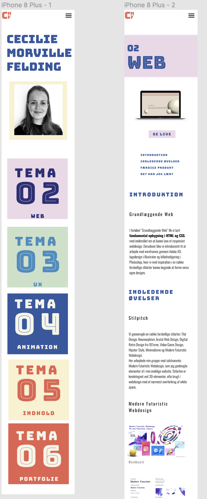
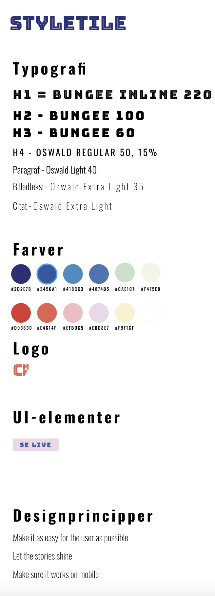
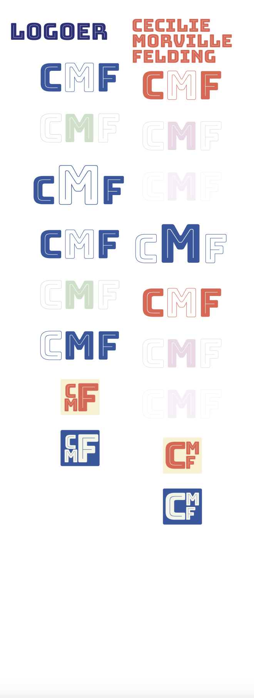

06
Portfolio
Introduktion
Deskresearch
Jeg startede eksplorativt ved at samle inspiration til et moodboard med forskellige stilarter og farvekombinationer. Jeg ønskede at mit website skulle udstråle at være farverig og "playful", da jeg synes at det repræsenterede på bedste måde den nysgerring og kreative tilgang, vi har arbejdet med de forskellige projekter på. Herefter lavede jeg rå sketches til low fidelity wireframes, hvor jeg ønskede så få klik for brugeren som muligt for at navigere rundt på siden med løbende kontinuitet og symmetri, så siderne, trods forskelligheder i indhold, stadig var genkendelige og nemme for brugeren at navigere i. Moodboard blev til Styletile og jeg brugte en digital udgave af Crazy 8s til at designe mit logo.
I Figma lavede jeg min low fidelity wireframe til en high fidelity wireframe, samt layout diagram til forsiden samt en portfolioside.
Designprincipper
Make it as easy for the user as possible
Let the stories shine
Make sure it works on mobile
For at leve op til mine designprincipper testede min wireframe af på naboer, for at teste om hvordan de navigerede på siden. Det resulterede blandt andet i at jeg tilføjede anker-menuknapper på portfoliosiderne, da feedback var, at siden kunne blive en anelse lang at orrientere sig i. Desværre har jeg ikke helt formodet at leve op til 3. designprincip, da mine fonte ændrer sig, hvilket jeg ikke har formået at ændre inden aflevering, men stadig bor i min backlog.
Wireframe

Stiletyle

Crazy 8 Logodesign

Reflektioner
Mobile First
På trods af at jeg havde designet wireframes udfra princippet om Mobile First, startede jeg med at kode portfoliosiderne Desktop first. Det resulterede i to forskellige CSS-filer for henholdsvis forside og undersider. Det vil jeg næste gang kombinere til én, hvor alt er kodet udfra Mobile-First-princippet.
Gestaltlovene
Omend jeg har bestrebet mig efter at efterleve Gestaltlovene i mit design, har jeg udfordret "Erfaring" ved at placere mit logo i højre side og menu'en i venstre. Det gjorde jeg fordi jeg havde læst at design skal "lean left" og menuen var "tungere" end logoet. Det fungerede fint for mit lille udsnit af brugertests, dog har jeg siden lært at best-practise er at have logoet i venstre side som eksempeltvis Facebook, Walmart og DR.